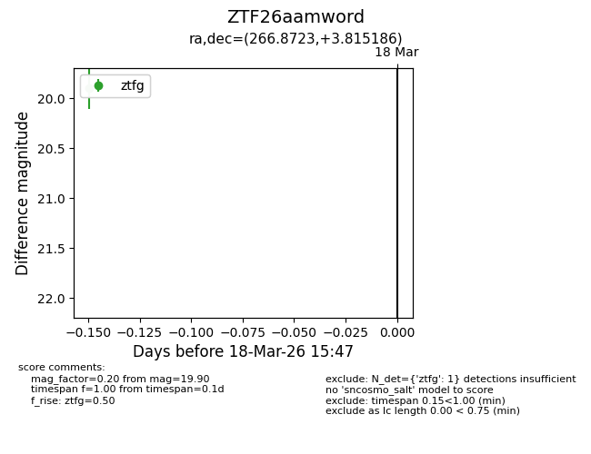
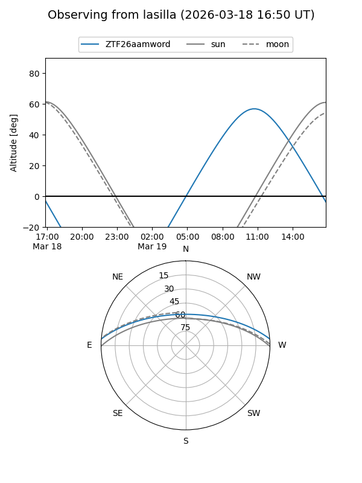
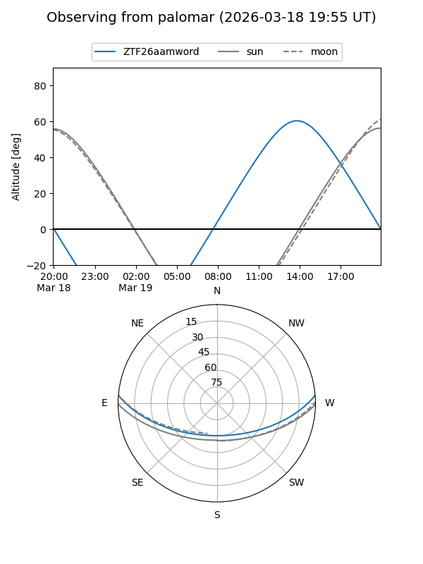

ZTF26aamword
Target ZTF26aamword at 2026-03-18 15:49
Aliases and brokers:
FINK: link
Lasair: link
ALeRCE: link
alt names
ZTF26aamword (ztf,fink_ztf)
Coordinates:
equatorial (ra, dec) = 266.8723,+3.81519
equatorial (HMS+DMS) = 17:47:29.36,+03:48:54.67
galactic (l, b) = (28.9903,+15.95720)
Flags:
Photometry:
last ztfg=19.90
1 ztfg detections
Lightcurve

Visibility


Additional plots